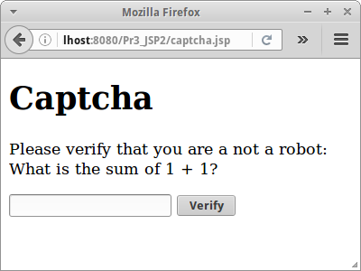
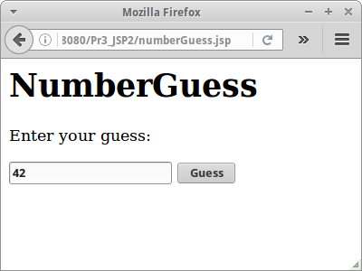
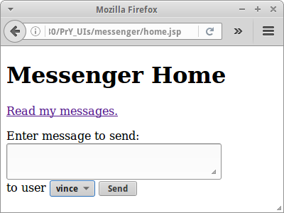
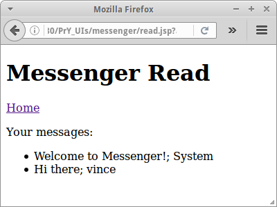

Session and Application
Bisher sind unsere Webanwendungen sehr dumm, sie haben kein Gedächtnis, weder Kurzzeit noch Langzeit. Mit den Session und Applikation Objekten erhalten wir auf einmal ein Kurzzeitgedächtnis, d.h. wir können uns auf einmal Dinge merken. Und damit ergeben sich viele neue Anwendungsszenarien.
.
Session
Die wichtigsten Anwendungen im Internet haben mit Shopping zu tun. Und das zentrale Konzept hinter jeder Shopping Anwendung ist der Warenkorb. Der Warenkorb ist einfach eine Liste von Artikeln, z.B. Büchern, die unser Kunde gerne kaufen möchte.
Ganz wichtig ist natürlich, dass jeder Kunde seinen eigenen Warenkorb hat. Und genau für diesen Zweck wurde das session Objekt erfunden. Eine "Session" ist sozusagen eine "Einkaufs-Session". Jeder Nutzer hat seine eigene Session. Und so wie es in JSP die Objekte out, request und response bereits gibt, gibt es auch das session Objekt bereits vordefiniert.
Das session Objekt ist einfach eine HashMap mit beliebigen key-value Paaren. Die Benutzung ist denkbar einfach:
<%
session.setAttribute("key", "value");
String v = (String) session.getAttribute("key");
%>
Das wirklich schöne ist, dass wir von jeder unserer JSP Seiten auf das session Objekt zugreifen können. Bisher war es immer kompliziert wenn wir Daten zwischen zwei Seiten transferieren wollten. Im letzten Kapitel haben wir drei Varianten kennengelernt:
- das "Reverse Text" Beispiel benutzte einem Link
- das "Captcha" Beispiel benutzte ein Hidden Tag
- das "Cookies" Beispiel benutze Cookies.
Aber wenn wir kurz nachdenken, sehen wir dass eigentlich alle immer über das request Objekt gingen. Ausserdem mussten die Daten immer über den Browser gehen, was z.B. bei unserer Captcha Anwendung dazu führte, dass sie ganz einfach zu knacken war.
.
Captcha
Betrachten wir das Captcha Beispiel aus dem letzten Kapitel noch einmal. Anstelle das Hidden-Tag zu verwenden, würden wir die richtige Antwort in der Session speichern:
<%
int a = (int) (Math.random() * 9) + 1;
int b = (int) (Math.random() * 9) + 1;
session.setAttribute("correctAnswer", a+b);
%>
um dann im captchaLogic.jsp das Resultat wieder aus der Session zu holen:
<%
String sum = request.getParameter("sum");
Integer result = (Integer) session.getAttribute("correctAnswer");
...
%>
Der Rest des Codes bleibt gleich. Versuchen wir jetzt aber mal diese neue Variante von Captcha zu knacken. Mit View Source sehen wir nichts. Und auch sonst lässt sich diese neue Version nicht knacken. Das hat damit zu tun, dass das Resultat, also die correctAnswer, nie zum Browser geschickt wird, sie verlässt den Server nie. Es ist ganz wichtig das zu verstehen!
.
SEP: Daten die wir im session Objekt speichern werden immer nur auf dem Server gespeichert.
.
Expiration
Daten die im session Objekt gespeichert sind werden also auf dem Server gehalten, der Browser bekommt die nie zu sehen. Das kann aber auch zu einem Problem werden, und zwar wenn wir zu viele Nutzer haben, oder zu große Datenmengen in der session Hashmap speichern. Deswegen haben Sessions immer einen Timeout: wenn eine Session für eine bestimmte Zeit (meist 15 Minuten) nicht genutzt wird, wird sie einfach gelöscht. Und deswegen sollten wir auch nicht zu große Datenmengen in Sessions speichern.
Wie funktioniert das mit der Session? Wir könnten das auch selbst machen, wie wir in den Beispielen StateURL und StateCookie im letzten Kapitel gesehen haben, aber warum kompliziert wenn es auch einfach geht.
.
Shopping
Der Klassiker für den Einsatz von Sessions ist die Shopping Anwendung. In unserer sehr einfachen Shopping Anwendung gibt es einen Warenkorb (einfach eine Liste) und der Kunde kann Artikel zum Warenkorb hinzufügen oder wieder aus dem Warenkorb entfernen. Und natürlich wollen wir den Inhalt des Warenkorbs auflisten.
<html> <body> <h1>Shopping</h1> <% Vector<String> cart = (Vector<String>)session.getAttribute("Cart"); if ( cart == null ) { cart = new Vector<String>(); session.setAttribute("Cart", cart); } out.println( "<ul>" ); for (int i = 0; i < cart.size(); i++) { String item = cart.get(i); out.println( "<li>" ); out.println( item ); out.println( " <a href='shoppingLogic.jsp?id="+i+"'>(delete)</a>" ); out.println( "</li>" ); } out.println( "</ul>" ); %> <form action="shoppingLogic.jsp" method="POST"> <textarea name="item" rows="1" cols="40"></textarea> <input type="submit" value="Add to cart" /> </form> </body> </html>
Das Löschen und Hinzufügen passiert in der shoppingLogic.jsp Seite.
<%
// add a new item
String item = request.getParameter("item");
if ( (item != null) && (item.length() > 3) && (item.length() < 1000) ) {
Vector<String> cart = (Vector<String>)session.getAttribute("Cart");
cart.add( item );
}
// delete existing item
String idToDelete = request.getParameter("id");
if ( idToDelete != null) {
Vector<String> cart = (Vector<String>)session.getAttribute("Cart");
int id = Integer.parseInt( idToDelete );
if ( ( id >= 0 ) && ( id < cart.size() ) ) {
cart.remove( id );
}
}
response.sendRedirect("shopping.jsp");
return;
%>
Wenn wir fertig sind schicken wir den Nutzer einfach zurück zur shopping.jsp Seite.
.
Login
Kommen wir zu unserem nächsten Klassiker: der Login Seite. Praktisch jeder Website hat eine. Im Prinzip ist das Schema immer das Gleiche: Es gibt ein paar Seiten, die kann jeder sehen, es gibt aber auch einen geschützten Bereich, protected, den kann man nur sehen, wenn man sich vorher eingeloggt hat.
Wir brauchen also mindestens drei Seiten: die login.jsp Seite, die jeder sehen kann, dann eine protected.jsp Seite, die kann man nur sehen wenn man sich erfolgreich eingeloggt hat, und eine loginLogic.jsp Seite, die checkt, ob man die richtige Benutzernamen-Passwort Kombination eingegeben hat. Um das Ganze etwas einfacher testen zu können fügen wir noch eine Navigationsleiste in jede Seite mit ein. Ach ja, und ausloggen sollten wir uns auch noch können, also eine Seite logout,jsp brauchen wir noch.
Die login.jsp Seite ist trivial, da brauchen wir gar nichts mehr dazu zu sagen. Interessanter wird die loginLogic.jsp Seite.
<%
String id = request.getParameter("userId");
String passwd = request.getParameter("password");
if ((id != null) && (passwd != null)) {
if ((id.equals("ralph")) && (passwd.equals("123456"))) {
session.setAttribute("User", id);
response.sendRedirect("protected.jsp");
return;
}
}
session.removeAttribute("User");
response.sendRedirect("login.jsp");
return;
%>
Wir checken also ob der Nutzer den richtigen Benutzernamen und das richtige Passwort eingegeben hat. Wenn ja, dann fügen wir einen neuen Eintrag in das Session Map mit dem Key "User" ein und schicken ihn zu Seite protected.jsp. Falls nein, dann löschen wir das Attribute "User" sicherheitshalber, und schicken den Nutzer zurück zu login.jsp Seite. Es ist ganz wichtig, nach dem response.sendRedirect() immer ein return zu setzen, denn ohne, würden im Beispiel oben die Zeilen danach noch ausgeführt werden.
Interessant ist jetzt wie wir die Seite protected.jsp schützen. Das geht überraschend einfach: wir müssen nur nachschauen, ob das Attribute "User" gesetzt wurde oder nicht:
<% String user = (String)session.getAttribute("User"); if ( user == null ) { response.sendRedirect("login.jsp"); return; } %> <!DOCTYPE html> <html> <body> <%@include file="navigation.jsp" %> <h1>Protected</h1> <p>Welcome <%= user %>.</p> </body> </html>
Falls es nämlich nicht gesetzt wurde, dann darf der Nutzer die Seite nicht sehen, wir schicken ihn einfach zur login.jsp Seite zurück. Ansonsten darf er die Seite sehen. Wir müssten das natürlich mit jeder Seite tun die wir schützen wollen. Das ist zwar etwas umständlich, aber funktioniert ganz gut. In zwei Kapiteln werden wir sehen wie man das auch weniger umständlich machen kann.
Bleibt noch zu klären wie das mit dem logout funktioniert. Das ist eigentlich ein Einzeiler:
<%
session.removeAttribute("User");
response.sendRedirect("login.jsp");
return;
%>
Wir löschen also das "User" Attribut aus der Session und schicken den Nutzer zurück auf Los.
SEP: Nach einem sendRedirect() sollte immer ein return Statement folgen.
.
Include Directive
Noch eine kurze Anmerkung zur "include directive", die haben wir schon mal kurz im ersten Kapitel benutzt ohne zu wissen wie das wirklich funktioniert.
<html>
<body>
<%@include file="navigation.jsp" %>
<h1>Login</h1>
...
</body>
</html>
Wir verwenden sie zur Vermeidung von doppelten Code. Was das Include macht, es fügt die einzufügende Datei, in der Regel eine JSP Datei, an der Stelle ein, an der das Tag steht. Es ist also so, wie wenn der Inhalt von navigation.jsp an der Stelle stehen würde. Das passiert bevor aus der JSP Seite ein Servlet generiert wird. Das führt dazu, dass das Inkludieren zur "compile time" passiert, also die Seite wird schon beim Kompilieren eingefügt, macht also unseren Website nicht langsamer. Deswegen können wir soviele Dateien einfügen wie wir lustig sind. Anbieten tut es sich natürlich ganz speziell für Header und Footer, die auf allen Seiten gleich sein sollen.
.
Application
Mit dem session Objekt können wir Daten zwischen verschiedenen Seiten eines Nutzers austauschen. Wie können wir aber Daten zwischen verschiedenen Nutzern austauschen, oder besser wie können wir Daten zentral mehreren Nutzern zur Verfügung stellen? Dafür gibt es das application Object. Es funktioniert genauso wie das session Objekt, nur dass halt jeder von überall darauf zugreifen kann. Sozusagen eine Art "globale" Hashmap.
<%
application.setAttribute("key", "value");
String v = (String) application.getAttribute("key");
%>
.
Visitor
Schauen wir unser Visitor Beispiel aus dem zweiten Kapitel noch einmal an. Damals haben wir Instanzvariablen verwendet um einen globalen Zähler zu implementieren. Die Lösung hatte aber Probleme wie wir damals bereits angedeutet haben.
Eine besser Lösung einen Visitor Counter zu implementieren ist mit Hilfe des application Objekts. Der Code ist ganz einfach, wir speichern den Zähler im application Objekt. Das einzige was noch zu checken ist, dass der Zähler beim allerersten Aufruf auf eins gesetzt wird.
<% Integer counter = (Integer)application.getAttribute("visitorCounter"); if ( counter == null ) { counter = 1; } else { counter++; } application.setAttribute("visitorCounter", counter); %> <html> <body> <h2>Welcome, Visitor Nr. <%= counter %></h2> </body> </html>
Diese neue Version löst fast alle Probleme unserer alten Version, bis auf eines: wenn der Server neu gestartet wird, dann wird der Zähler wieder zurück gesetzt. Die Lösung dafür sind jspInit() und jspDestroy(). Für unseren "new and improved" Visitor Counter bedeutet das, dass wir wenn die jspDestroy() Methode aufgerufen wird, den momentanen Wert des Zählers in eine Datei (oder später Datenbank) speichern, und wenn die jspInit() Methode aufgerufen wird, den Wert des Zählers aus der Datei lesen.
.
Guestbook
Ein typisches Anwendungsszenario für das application Objekt ist das klassische Guestbook. Im Guestbook können Nutzer unseres Sites Kommentare hinterlassen. Foren funktionieren auch ganz ähnlich. Da jeder auf dem Guestbook Kommentare hinterlassen kann, bietet es sich an diese im application Objekt zu speichern.
In unsere Guestbook Anwendung sollen also Nutzer Kommentare abgeben können, die Kommentare aller Nutzer sollen aufgelistet werden, und es soll auch die Möglichkeit geben Kommentare zu löschen. Unsere Anwendung besteht wieder aus zwei Teilen, der guestbook.jsp, die das Anzeigen der Kommentare übernimmt, die Links zum Löschen vom Kommentaren enthält und einer Textarea um neue Kommentare abzugeben. Interessant ist, dass der Code identisch mit dem der Shopping List ist, lediglich session wird durch application ersetzt.
<html> <body> <h1>Guestbook</h1> <% Vector<String> comments = (Vector<String>) application.getAttribute("Guestbook"); if (comments == null) { comments = new Vector<String>(); application.setAttribute("Guestbook", comments); } out.println("<ul>"); for (int i = 0; i < comments.size(); i++) { String msg = comments.get(i); out.println("<li>"); out.println(msg); out.println(" <a href='guestbookLogic.jsp?id=" + i + "'>(delete)</a>"); out.println("</li>"); } out.println("</ul>"); %> <form action="guestbookLogic.jsp" method="POST"> <textarea name="comment" cols="40" rows="1"></textarea><br /> <input type="submit" value="Post new comment" /> </form> </body> </html>
Ausserdem gibt es wieder eine Seite, guestbookLogic.jsp, für die Logik, die also neue Kommentare zum application Objekt hinzufügt, oder exisitierende löscht.
<%
// add a new guestbook entry
String comment = request.getParameter("comment");
if ( (comment != null) && (comment.length() > 5) && (comment.length() < 1000) ) {
Vector<String> comments = (Vector<String>)application.getAttribute("Guestbook");
comments.add( comment );
}
// delete existing guestbook entry
String idToDelete = request.getParameter("id");
if ( idToDelete != null) {
Vector<String> comments = (Vector<String>)application.getAttribute("Guestbook");
int id = Integer.parseInt( idToDelete );
if ( ( id >= 0 ) && ( id < comments.size() ) ) {
comments.remove( id );
}
}
response.sendRedirect("guestbook.jsp");
return;
%>
Wie wir im Code sehen, nehmen wir ein paar einfach Checks des User-Inputs vor. Allerdings vor XSS Attacken bewahrt uns das nicht, wenn wir aber unsere escapeXml() Methode verwenden würden, wäre wir auch dagegen gefeit.
.
Dictionary
Ein sehr schönes Beispiel sowohl für die Nutzung des application Objekts, als auch die Nutzung der jspInit() Methode ist unsere Dictionary Anwendung. Es geht darum Wörter aus dem Englischen ins Deutsche zu übersetzen.
Das Wörterbuch selbst ist in einer Datei gespeichert. Wir könnten also her gehen und jedes Mal wenn eine Übersetzung ansteht, das gesamte Wörterbuch von Dateisystem einlesen, nach dem gesuchten Wort suchen und es übersetzen. Dass das weder besonders effektiv noch sehr schnell sein wird dürfte jedem klar sein.
Also machen wir folgendes: in der jspInit() Methode laden wir das gesamte Wörterbuch und speichern es in einer Hashmap. Diese Hashmap fügen wir dann einfach dem application Objekt hinzu. Dieser Vorgang passiert nur einmal, wenn die JSP Seite das erste Mal aufgerufen wird.
<%!
public void jspInit() {
String sPath = getServletContext().getRealPath("/") + "dictionary_en_de.txt";
Map<String,String> dictionary = loadDictionaryFromFile(sPath);
ServletContext application = getServletConfig().getServletContext();
application.setAttribute("Dictionary", dictionary);
}
private Map<String,String> loadDictionaryFromFile(String fileName) {
// look at example from first semester...
}
%>
<%
Map<String,String> dictionary =
(Map<String,String>)application.getAttribute("Dictionary");
String english = request.getParameter("englishWord");
String german = dictionary.get(english);
out.println("The German translation of '" + english + "' is '" + german + "'");
%>
Danach holen wir uns einfach die dictionary Hashmap aus dem application Objekt, suchen nach dem gewünschten Wort und seiner Übersetzung und geben diese aus.
SEP: Wir sollten vermeiden Instanzvariablen in JSP Seiten zu verwenden.
SEP: Wir sollte das Dateisystem so wenig wie möglich verwenden.
.
Review
Was haben wir in diesem Kapitel gelernt? Wir haben auf einmal ein Kurzzeitgedächtnis in den Formen
- session: für individuelle Informationen die nur einen Nutzer betreffen, Stichwort Warenkorb und
- application: für globale Informationen die eine von allen Nutzern geteilt werden, Stichwort Guestbook.
Dass wir damit sehr interessante Projekte realisieren können werden wir gleich sehen.
.
Projekte
Wir haben jetzt das nötige Handwerkszeug, dass wir viele Beispiele aus dem ersten Semester "webifizieren" können. Wir werden dabei sehen, dass wir sehr viel vom Code aus dem ersten Semester wiederverwenden können, man nennt das auch "Re-Use".
.
NumberGuess
Ähnlich wie beim Visitor Counter Beispiel, haben wir beim NumberGuess Beispiel aus dem letzten Kapitel, das Hidden-Tag verwendet. Das ist natürlich nicht so schlau, denn jeder der weiß wie das mit dem "View Source" funktioniert, kann die Zahl sehr schnell erraten. Deswegen wollen wir in unserem ersten Projekt das NumberGuess Beispiel so abändern, dass es die zu ratende Zahl im session Objekt speichert und nicht im Hidden-Tag, ganz in Analogie zu dem Visitor Counter Beispiel.
.
Hangman
Wir haben Hangman ja bereits im ersten Semester programmiert, und es wäre natürlich Unsinn jetzt wieder von vorne zu beginnen. Anstelle nehmen wir einfach die Klasse Hangman aus dem ersten Semester und machen ein paar kleine Modifikationen:
- zuerst einmal entfernen wir das "extends ConsoleProgram",
- dann verschieben wir die Klasse in ein Paket, z.B. "de.variationenzumthema.internet",
- wir nehmen den Inhalt der run() Methode und kopieren ihn in den Konstuktor
- und wir machen Methoden auf die wir von aussen zugreifen müssen public.
Nach diesen Vorbereitungen, überlegen wir uns kurz wie die Webanwendung funktionieren soll: erst einmal, soll jeder Nutzer sein eigenes Hangman Spiel bekommen. Das bedeutet, dass wir mit dem session Objekt arbeiten müssen. Beim ersten Laden der Seite, muss Hangman initialisiert werden, also ein neues Wort soll erzeugt werden. Das passiert im Konstuktor der Hangman Klasse. Die fügen wir dann zum session Objekt hinzu.
<%@page import="de.variationenzumthema.internet.Hangman"%>
<%
// get handle to Hangman object
Hangman hangman = (Hangman)session.getAttribute("Hangman");
if ( (hangman == null) || (request.getParameter("reset") != null) ) {
hangman = new Hangman();
session.setAttribute("Hangman", hangman);
}
// check if a guess was made
String guess = request.getParameter("guess");
if ( (guess != null) && (guess.length() == 1) ) {
hangman.checkGuess(guess);
if ( hangman.areWeDone() ) {
out.println("Congratulations!");
}
}
%>
<!DOCTYPE html>
<html>
<body>
<h1>Hangman</h1>
<p>The word looks like this: <strong><%= hangman.getHintWord() %></strong>.<br/>
You used <%= hangman.getCounter() %> guesses.</p>
<form action="hangman.jsp" method="POST" >
Your guess:
<input type="text" name="guess" />
<input type="submit" value="Guess" />
</form>
(<a href="hangman.jsp?reset=true">Reset</a>)
</body>
</html>
Wir haben hier auch noch gleich eine "Reset" Funktion mit eingebaut, falls das Wort zu schwer war.
.
TicTacToe
TicTacToe ist ein anderes sehr schönes Beispiel, wie wir ein Programm aus dem ersten Semester webifizieren können. In unserem TicTacToe soll Mensch gegen Maschine spielen. Die Maschine fängt an mit dem ersten Zug. Da wir das Problem ja schon im ersten Semester gelöst haben, machen wir das Gleiche wie oben: wir nehmen den Code aus dem ersten Semester und folgen den Schritten von Hangman um aus dem GraphicsProgram eine allgemeine Klasse zu machen.
Natürlich haben wir in einer Webanwendung keine MouseEvents, da müssen wir uns was überlegen. Eine Lösung sind Links: z.B. könnten wir die Position x=2 und y=0 wie folgt in einem Link kodieren:
<a href='ticTacToe.jsp?posI=2&posJ=0'>_</a>
Das TicTacToe Feld selbst stellen wir dann als HTML Tabelle dar. Und die Logik haben wir uns ja im ersten Semester schon ausgedacht.
<%@page import="de.variationenzumthema.internet.TicTacToeLogic"%>
<%
// get handle to TicTacToe object
TicTacToeLogic ttt = (TicTacToeLogic)session.getAttribute("TicTacToe");
if ( (ttt == null) || (request.getParameter("reset") != null) ) {
ttt = new TicTacToeLogic();
session.setAttribute("TicTacToe", ttt);
}
// check if human made a move
if ( request.getParameter("posI") != null ) {
int posI = Integer.parseInt(request.getParameter("posI"));
int posJ = Integer.parseInt(request.getParameter("posJ"));
ttt.setNewPosition(posI,posJ);
}
%>
<!DOCTYPE html>
<html>
<body>
<h1>TicTacToe</h1>
<table border="1">
<%
for (int i = 0; i < 3; i++) {
out.print("<tr>");
for (int j = 0; j < 3; j++) {
out.print("<td style='width:20px;text-align:center'>");
if ( ttt.getBoardAt(i, j) == '_') {
out.print("<a href='ticTacToe.jsp?posI="+i+"&posJ="+j+"'>");
}
out.print( ttt.getBoardAt(i, j) );
if ( ttt.getBoardAt(i, j) == '_') {
out.print("</a>");
}
out.print("</td>");
}
out.print("</tr>");
}
// check for game over:
if ( ttt.isGameOver() ) {
out.println("Game over!");
}
%>
</table>
(<a href="ticTacToe.jsp?reset=true">Reset</a>)
</body>
</html>
Wie bei Hangman, instanziieren wir beim ersten Aufrufen der Seite eine Objekt der Klasse TicTacToeLogic. Dieses wird dann einfach im session Objekt gespeichert. Was ein klein bischen Arbeit macht, ist die Tabelle zu generieren und die Links richtig zu setzen.
.
Adventure
Machen wir weiter mit dem Adventure Spiel aus dem ersten Semester. Inzwischen kennen wir den Drill: wir nehmen wieder unsere Adventure ConsoleProgram Klasse aus dem ersten Semester und machen daraus eine ganz normale Klasse mit Konstruktor. Etwas müssen wir allerdings beachten: die Daten für das Adventure Spiel kommen ja aus einer Datei, und den Pfad zu dieser Datei (die ja irgendwo auf dem Server liegt) müssen wir dem Konstruktor übergeben:
public class Adventure {
public Adventure(String filePath) {
loadWorld(filePath);
currentRoom = "kitchen";
}
...
}
Die Klasse wird wie immer beim ersten Laden der JSP Seite instanziiert.
<%
Adventure advntr = (Adventure) session.getAttribute("Adventure");
if (advntr == null) {
String filePath = config.getServletContext().getRealPath("/") + "adventure.txt";
advntr = new Adventure(filePath);
session.setAttribute("Adventure", advntr);
}
%>
Wir beginnen unser Adventure in der Küche. Von da können wir in eine Liste von Räumen, die wir mittels getAvailableRooms() erhalten. Wir könnten diese Liste einfach aufzählen, viel besser ist es hier aber das HTML Select-Tag zu verwenden. Der Vorteil des Select-Tags ist, dass der Nutzer eigentlich keine falschen Eingaben machen kann.
<form action="adventureLogic.jsp" method="POST" > You can go to: <select name="room"> <% for (String room : advntr.getAvailableRooms()) { out.println("<option value='" + room + "'>" + room + "</option>"); } %> </select> <input type="submit" value="Go" /> </form>
Die Logik um zum nächsten Raum zu gelangen haben wir in die adventureLogic.jsp Datei ausgelagert:
<%@page import="de.variationenzumthema.internet.Adventure"%>
<%
if (request.getParameter("reset") != null) {
session.removeAttribute("Adventure");
} else {
String room = request.getParameter("room");
Adventure advntr = (Adventure) session.getAttribute("Adventure");
advntr.setCurrentRoom(room);
}
response.sendRedirect("adventure.jsp");
%>
Das ist zwar nicht nötig, macht unseren Code aber viel lesbarer und wartbarer.
Sowohl in Hangman als auch TicTacToe verwendeten wir nur eine Datei für Logik und für View. Aber eigentlich sollte man die beiden trennen, das ist was wir hier gemacht haben: der View ist in adventure.jsp und die Logik in adventureLogic.jsp. Später wird uns das in Richtung Model-View-Controller Pattern führen, aus unserer Logik wird der Controller.
SEP: Je weniger Optionen ein Nutzer hat, desto weniger kann schief gehen.
.
Chat
Bisher haben wir nur mit dem session Objekt gearbeitet, es wird Zeit dass wir auch ein Beispiel mit dem application Objekt machen. Ein Chat in dem mehrere Menschen miteinander chatten können ist eine schöne Anwendung für das application Objekt. Wir können das Formular aus dem TwoPlayer Chat aus Kapitel eins verwenden, wir brauchen die Seiten chat.jsp und conversation.jsp.
In der chatLogic.jsp Seite nehmen wir die einzelnen Messages und fügen sie zur Liste der Konversation hinzu. Die Konversations-Liste speichern wir im application Objekt. Damit wir zwischen den verschiedenen Nutzern unterscheiden können verwenden wir die letzten zwei Ziffern der sessionId, und fügen die vor die eigentliche Message.
<% String msg = request.getParameter("msg"); if (msg != null) { Vector<String> conversation = (Vector<String>) application.getAttribute("Chat"); if (conversation == null) { conversation = new Vector<String>(); application.setAttribute("Chat", conversation); } String id = session.getId(); id = id.substring(id.length()-2); conversation.add(id + ": " + msg); } response.sendRedirect("chat.jsp"); %>
Kommen wir zu der Geschichte mit dem IFrame-Tag: das Problem mit dem Web ist, dass es nach dem Poll-Prinzip funktioniert. Soll heißen, der Browser muss beim Server nachfragen ob sich irgendetwas geändert hat. Der Server kann nicht von sich aus irgendwelche Daten an den Browser schicken (das geht erst mit HTML5's WebSockets). In unserem Beispiel bedeutet das, dass wir nicht mitbekommen, wenn ein anderer Nutzer eine neue Message gepostet hat. Wir müssten also eigentlich einmal alle paar Sekunden auf den Reload Knopf drücken um festzustellen, ob irgendjemand was Neues gepostet hat.
Das können wir aber auch automatisch machen, mit Hilfe des Refresh Meta-Tags. Wir schreiben also eine Seite chatConversation.jsp, die nichts anderes macht, als sich selbst alle 5 Sekunden neu zu laden. Alles was die Seite macht, ist einfach den Inhalt der Konversation zu listen. Und hier kommt der IFrame-Tag ganz gelegen, er erlaubt es uns nämlich eine andere Seite in unsere Hauptseite einzubetten.
<% Vector<String> conversation = (Vector<String>)application.getAttribute("Chat"); if ( conversation == null ) { conversation = new Vector<String>(); application.setAttribute("Chat", conversation); } %> <!DOCTYPE html> <html> <head> <meta http-equiv="refresh" content="5" /> </head> <body> <% for (int i=conversation.size()-1; i>=0; i--) { out.println( conversation.get(i) +"<br/>" ); } %> </body> </html>
Die Lösung funktioniert. Allerdings, und das sollten wir nicht aus den Augen verlieren, generieren wir mit dem Refresh-Tag eine konstante Hintergrundlast auf unserem Server. Alle fünf Sekunden kommt von jedem Browser der an dem Chat teilnimmt ein Request. Bei vielen Benutzern kann das zu einem Problem werden. Eleganter wäre wenn man das Ganze mit HTML5's WebSockets machen würde. Aber erstens benötigt man JavaScript dazu, und zweitens ist das etwas komplizierter.
SEP: Man sollte regelmäßige Refreshs vermeiden, da sie eine unnötige Last auf dem Server erzeugen.
.
Mines
Bisher waren alle unsere Beispiele eher textlastig. Wie wäre es mit einem kleinen Graphikbeispiel? Da wir ja weder JavaScript, Applets oder geschweige denn Flash verwenden wollen, werden wir auf Animationen verzichten müssen. Aber ein Spiel wie Mines aus dem ersten Semester oder Kartenspiele sind kein Problem.
Wir nehmen wieder den Mines Code aus dem ersten Semester und machen aus dem GraphicsProgram wieder eine allgemeine Klasse, wie wir das auch bei Hangman gemacht haben. Die Bilder laden wir auf den Server hoch, und wir verwenden das img-Tag und eine HTML Tabelle um das Spielfeld grafisch im Browser darzustellen. Inzwischen dürfte das schon fast zu Routine geworden sein:
<% MinesClone mc = (MinesClone)session.getAttribute("MinesClone"); if ( mc == null ) { mc = new MinesClone(); session.setAttribute("MinesClone", mc); } %> <!DOCTYPE html> <html> <body> <h1>Mines</h1> <%= mc.drawWholeField() %> <a href="minesLogic.jsp?reset=true">(Reset)</a> </body> </html>
Das Zeichnen des Spielfeldes überlassen wir der MinesClone Klasse, das macht unser HTML übersichtlicher, und löst auch die Kopplung, soll heißen wir müssen weniger Methoden der MinesClone Klasse public machen. Die drawWholeField() Methode sieht wie folgt aus:
public String drawWholeField() {
String html = "<table style='border-spacing: 0;border-collapse: collapse;'>";
for (int i = 0; i < FIELD_SIZE; i++) {
html += "<tr>";
for (int j = 0; j < FIELD_SIZE; j++) {
html += drawOneTile(i, j);
}
html += "</tr>";
}
html += "</table>";
return html;
}
Bleibt nur noch die minesLogic.jsp Seite, und die simuliert eigentlich nur den MouseClick, ähnlich wie bei TicTacToe:
<%@page import="de.variationenzumthema.internet.MinesClone"%>
<%
if ( request.getParameter("reset") != null ) {
session.removeAttribute("MinesClone");
} else {
int i = Integer.parseInt( request.getParameter("i") );
int j = Integer.parseInt( request.getParameter("j") );
MinesClone mc = (MinesClone)session.getAttribute("MinesClone");
mc.mouseClicked(i, j);
}
response.sendRedirect("mines.jsp");
%>
Eigentlich überraschend einfach. Falls wir uns jetzt inspiriert fühlen, können wir auch unserem TicTacToe Spiel einen grafischen Facelift verpassen.
.
Messenger
Bei Messanger handelt es sich um eine kleine Anwendung in der sich verschiedene Nutzer Messages senden können. Die Details zu dieser Anwendung haben wir ja bereits im ersten Kapitel beschrieben und auch das UI haben wir dort schon umgesetzt. Hier wollen wir uns jetzt um die Datenhaltung und Businesslogik kümmern.
Die Login Seite ist reine UI, sie sendet lediglich den Alias des Nutzers an die Seite messengerHome.jsp.
Die zentrale Frage die sich stellt bevor wir weitermachen können, verwendet man das session oder das application Objekt? Oder vielleicht beide? Da wir Messages zwischen verschiedenen Personen hin und her schicken wollen, ist klar das wir etwas brauchen, auf das alle Nutzer zugreifen können. Deswegen ist auf jeden Fall das application Objekt notwendig. In ihm speichern wir eine Map, die den Nutzer-Alias als Key hat und die Messages für diesen Nutzer als Value:
Map<String, List<String>> users =
(Map<String, List<String>>) application.getAttribute("Messenger");
Wie üblich müssen wir beim allerersten Aufruf dafür sorgen, dass die Map initialisiert wird.
Die nächste Frage die sich stellt, handelt es sich um einen neuen Nutzer, oder hat sich der Nutzer schon mal bei uns angemeldet. Dies können wir einfach mittels
if (!users.containsKey(alias)) {
List<String> msgs = new ArrayList<String>();
msgs.add("Welcome to Messenger!" + "; System");
users.put(alias, msgs);
}
klären. Gibt es den Nutzer noch nicht, müssten wir eine neue Liste für Messages anlegen.
Danach können wir dem Nutzer das Formular zum versenden von Messages zeigen:
<html> <body> <h1>Messenger Home</h1> <p><a href='messengerRead.jsp?alias=<%= alias %>'>Read my messages.</a></p> <form action="messengerSend.jsp" method="GET"> Enter message to send: <textarea name="message" rows="2" cols="40"></textarea> <input type="hidden" name="senderId" value="<%= alias %>"/> <br/> to user <select name="receiverId"> <% for (String name : users.keySet()) { out.println("<option value='" + name + "'>" + name + "</option>"); } %> </select> <input type="submit" value="Send"/> </form> </body> </html>
Als kleinen Bonus können wir dem Nutzer noch die möglichen Adressaten mit einem Select-Tag auflisten. Wir verwenden hier das Hidden-Tag um mitzuteilen wer der Sender der Nachricht ist. Alternativ, könnte man wie im Captcha Beispiel auch den Sender Alias im session Objekt speichern.
Die messengerSend.jsp Seite holt sich die Parameter und fügt die neue Message in der users-Map für den Empfänger ein:
<%
... get parameter ...
Map<String, List<String>> users =
(Map<String, List<String>>) application.getAttribute("Messenger");
List<String> msgs = users.get(receiverId);
msgs.add(message + "; "+senderId);
%>
DanachDie messengerRead.jsp Seite
<%
String alias = request.getParameter("alias");
Map<String, List<String>> users =
(Map<String, List<String>>) application.getAttribute("Messenger");
List<String> msgs = users.get(alias);
%>
<!DOCTYPE html>
<html>
<body>
<h1>Messenger Read</h1>
<p><a href='messengerHome.jsp?alias=<%= alias %>'>Home</a></p>
<p>Your messages:</p>
<ul>
<%
for ( int i=msgs.size()-1; i>=0; i-- ) {
out.println("<li>"+msgs.get(i) +"</li>");
}
%>
</ul>
</body>
</html>
listet einfach alle Messages die für einen bestimmten Nutzer bestimmt sind.
SI: Wir sollten den Messanger auf Sicherheitsprobleme hin untersuchen.
.
TwoPlayer
Nach dem Multiplayer-Chat wollen wir uns hier mit dem Two-Player Chat beschäftigen. Die genauen Anforderungen und die UI haben wir ja schon im ersten Kapitel abgehandelt. Kommen wir zum interessanten Teil, der Logik.
Um das Problem zu lösen benötigen wir sowohl das application als auch das session Objekt. Überlegen wir uns wie die Logik funktionieren soll: wenn der erste Spieler kommt, dann muss der erst einmal warten, und er bekommt eine waitingId, die der Einfachheit halber gleich seine sessionId ist. Deswegen brauchen wir das session Objekt. Und natürlich müssen wir uns irgendwo global (application) merken, dass jemand wartet. Ausserdem sollte der erste Spieler gelegentlich nachfragen, ob denn schon ein anderer Spieler aufgetaucht ist, das machen wir wie üblich mit dem Refresh-Tag:
<% // check logic... %> <html> <head> <meta http-equiv="refresh" content="5" /> </head> <body> <h1>TwoPlayer</h1> <p>Waiting for other player to join...</p> </body> </html>
Kommt der zweite Spieler, dann kann der ja an unserem globalen Merker erkennen, dass schon jemand wartet, und wir können die beiden verbinden. Wir vergeben dann eine pairId, die auch wieder der Einfachheit halber einfach die beiden sessionIds verknüpft ist. Der zweite Spieler kennt jetzt seine pairId, dem ersten Spieler müssen wir sie noch mitteilen. Da der ja aber alle 5 Sekunden fragt, können wir sie ihm dann beim nächsten Fragen mitteilen.
Sobald beide die pairId haben ist es ganz einfach: wir fügen zum application Objekt eine HashMap namens messageMap, die als Key die pairId hat und als Wert eine Liste mit der Konversation zwischen den beiden. Jedes mal wenn einer was sagt, wird das einfach an die Liste angehängt. Der Ansatz ist dann genauso wie bei unserer Chat Applikation weiter oben.
Da die Logik doch etwas komplizierter ist, macht es Sinn diese in eine eigene Klasse auszulagern. Das hat mehrere Vorteile: unsere JSP Seiten werden nicht so messy und bleiben übersichtlicher. Wir können die Klasse TwoPlayerLogic auch in anderen Anwendungen leicht wiederverwenden. Und wir können die Klasse unabhängig testen, z.B. mit JUnit.
package de.variationenzumthema.internet;
public class TwoPlayerLogic {
private String waitingId = null;
private Map<String, String> pairMap;
private Map<String, Vector<String>> messageMap;
public TwoPlayerLogic() {
pairMap = new HashMap<String, String>();
messageMap = new HashMap<String, Vector<String>>();
}
public void sendMessage(String pairId, String msg) {
Vector<String> msgs = messageMap.get(pairId);
if (msgs != null) {
msgs.add(msg);
}
}
public Vector<String> receiveMessages(String pairId) {
Vector<String> msgs = messageMap.get(pairId);
return msgs;
}
public String findPartner(String mySessionId) {
// check if I am paired already:
String pairId = pairMap.get(mySessionId);
if (pairId == null) {
if ((waitingId != null) && (waitingId != mySessionId)) {
// somebody is already waiting:
pairId = waitingId + mySessionId;
pairMap.put(waitingId, pairId);
pairMap.put(mySessionId, pairId);
waitingId = null;
// add a first welcome message
Vector<String> msgs = new Vector<String>();
msgs.add("Welcome!");
messageMap.put(pairId, msgs);
} else {
// nobody is waiting:
pairId = null;
waitingId = mySessionId;
}
}
return pairId;
}
public void removeFromPairMap(String pairId) {
// check if I am paired already:
if (pairId != null) {
int len = pairId.length() / 2;
String id1 = pairId.substring(0, len);
String id2 = pairId.substring(len);
pairMap.remove(id1);
pairMap.remove(id2);
messageMap.remove(pairId);
}
}
}
Was noch ein bischen Kopfzerbrechen bereitet ist, wie wir den Chat wieder beenden. Das ist subtil kompliziert, aber auch machbar.
Obwohl unser Beispiel sich auf Zwei-Spieler beschränkt, dürfte es relativ klar sein, dass Gruppen-Chats oder Gruppen-Spiele ganz ähnlich gelöst werden können.
Wie sicher ist unsere Anwendung? Ein Hacker (oder die NSA) müsste an die sessionId gelangen, um einen Chat abzuhören. D.h. von der Sicherheit her ist die Anwendung so gut wie jede online Banking Anwendung, vorausgesetzt man verwendet HTTPS.
Eine Sache die uns evtl noch stört, der ganz Datenverkehr läuft über unseren Server und produziert dort natürlich eine Last für die wir bezahlen müssen. Manchmal möchte man das, so wie bei WhatsApp. Wenn man aber nicht alles mit anhören möchte, was sich die Leute so erzählen, dann könnte man einen Peer-to-Peer Ansatz wählen, wie Skype das macht. Die Technologie dazu heißt WebRTC.
.
Research
Zu diesem Kapitel gibt es nicht ganz so viel zu erforschen. Aber die Themen "Session HIjacking" und auch wie funktioniert das mit den Sessions z.B. in Tomcat sind schon interessant.
.
Session Hijacking
Als erstes sollten wir nachlesen was "Session Hijacking" überhaupt ist. Dann sollten wir verstehen warum "Session Hijacking" mit HTTPS viel schwieriger ist. Lange haben sich auch grosse Website wie Facebook und eBay geweigert HTTPS zu verwenden (warum?). Erst mit dem Firefox Plugin Firesheep [1] wurde Session Hijacking aber auf einmal so einfach, dass fast alle Grossen jetzt HTTPS verwenden.
.
Tomcat
Tomcat ist ein sehr populärer Servlet Engine. Auch GlassFish verwendet ihn, wir merken das nur nicht. Interessant wäre jetzt mal herauszufinden, ob Tomcat Cookies oder URL Rewrite für sein Session Management verwendet. Und eine andere Frage wäre, kann man das vielleicht ändern?
.
Fragen
-
Und deswegen sollten wir auch nicht zu große Datenmengen in Sessions speichern. Sie speichern das Profilbild ihres Users mit 1 MegaByte in der Session. Wieviel Speicher (RAM) braucht ihr Server wenn 1000 Leute pro Minute gerade ihren Server besuchen. Beachten Sie, dass eine Session erst nach 15 Minuten Inaktivität wieder gelöscht wird! (15 GByte)
-
Session vs Application: Gehen Sie durch die Projekte im Anhang und entscheiden Sie ob für die Lösung des Projektes ein Session, ein Applikation Objekt, evtl. beide oder evtl. gar keines notwendig ist.
-
In einem der Assignments sollten Sie einen Dictionary Service implementieren. Also ein deutsch-englisches Wörterbuch mittels JSP. Beschreiben Sie kurz wie Sie dabei vorgegangen sind.
-
Betrachten Sie die folgenden fünf Web-Anwendungen. Bei der Entwicklung der Web-Anwendung müssen Sie entscheiden, ob Sie ein “session” Objekt, ein “application” Objekt, vielleicht beides, vielleicht aber auch keines brauchen. Für die unten aufgeführten Anwendungen entscheiden Sie welche nötig sind und begründen Sie Ihre Entscheidung.
- Calendar: Persönlicher Terminkalender.
- Roulette: Einfache Version von Roulette in der ein Spieler gegen den Computer spielt.
- Personal Phone Book: Ein Service um seine persönlichen Telefonnummern zu verwalten.
- Corporate Phone Book: Das Corporate Phone Book enthält die Telefonnummern aller Mitarbeiter einer Firma. Ist für alle Mitarbeiter zugänglich.
- BattleShip: Auch bekannt als "Schiffeversenken", hier spielen zwei Spieler gegeneinander.
-
Betrachten Sie die folgenden sechs Web-Anwendungen. Bei der Entwicklung der Web-Anwendung müssen Sie entscheiden, ob Sie ein “session” Objekt, ein “application” Objekt, vielleicht beides, vielleicht aber auch keines brauchen. Für die unten aufgeführten Anwendungen entscheiden Sie welche nötig sind und begründen Sie Ihre Entscheidung.
- Doodle: Doodle ist eine Web Anwendung, die es ermöglicht freie Zeitfenster für gemeinsame Treffen zu finden.
- ToDo: ToDo hat ein einfaches Textfeld in dem ein Benutzer eine ToDo-Liste eintragen kann. Jeder Benutzer sollten seine eigene ToDo-Liste sehen.
- Chat: Chat implementiert einen privaten Chat zwischen zwei Personen. TicTacToe: Schreiben Sie eine TicTacToe Web-App für einen Spieler, also Spieler gegen Computer.
- NumberGuess: Der Computer wählt eine Zufallszahl zwischen 0 und 100. Der Benutzer soll dann erraten welche Zahl das war, und erhält Feedback ob diese kleiner, größer oder gleich der Zufallszahl war, bis der Benutzer die Zahl richtig hat.
- Dictionary: Dictionary besteht aus einem HTML Formular in dem der Benutzer ein Wort eingibt und das dann übersetzt wird.
- JSP hat 9 vordefinierte Objekte. Nennen Sie vier von ihnen und erklären Sie wofür diese gut sind.
.
Referenzen
[1] Firesheep, codebutler.github.io/firesheep/
.